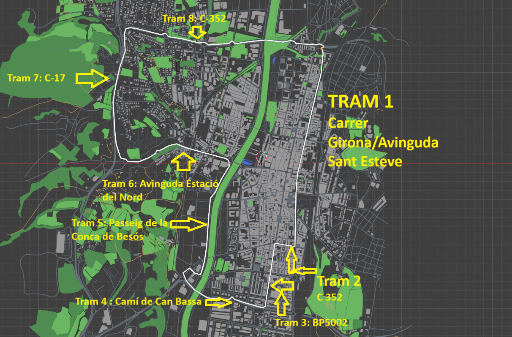

Granollers Urban Speed RACC 2026 OPEN
Veure resultatsGranollers Urban Speed RACC 2026 OPEN és una cursa de cotxes organitzada per Granollers Urban Speed amb l'objectiu de crear una cursa oberta a tothom amb ganes de passar-s'ho bé i competir. La competició serà de tipus contra rellotge, en el qual cada competidor marcarà un temps en solitari i on l'objectiu és aconseguir el millor davant els altres competidors. El competidor haurà de portar el seu cotxe, que haurà de ser o bé un seat o un renault amb un màxim de 400 cavalls. L'event es durà a terme el dia 5 de juliol a Granollers desde les 10:30h a les 17:30h. Per apuntar-s'hi vés a la secció d'inscripcions.
Horaris
Diumenge 1/4/2026
| Hora | Acte |
|---|---|
| 12h00 | Publicació del reglament i obertura d'inscripcions |
Divendres - 1/5/2026
| Hora | Acte |
|---|---|
| 20h00 | Tancament d'inscripcions |
Dilluns - 4/5/2026
| Hora | Acte |
|---|---|
| 12h00 | Publicació de la llista d'inscrits |
Dijous - 14/5/2026 (Porxada)
| Hora | Acte |
|---|---|
| 12h30 a 19h00 | Recollida d'Acreditacions per poder participar |
| 13h30 a 17h00 | Lliurament de documentació: Dorsals, Road book, Carnet de ruta, reconeixements + Verificacions administratives |
| 14h15 a 18h00 | Reconeixements |
| 15h00 a 19h30 | Verificacions tècniques: es publicarà un document amb l'horari de cada equip |
| 20h30 | Publicació de la llista d'autoritzats a prendre la sortida (web) |
Diumenge - 5/7/2026
| Hora | Acte |
|---|---|
| 7h00 a 9h30 | Voluntariat de muntatge del circuit |
| 9h30 a 17h30 | Començament de la competició |
| 18h00 | Publicació dels resultats |
| 18h15 | Entrega de trofeus |
| 18h30 | Obertura del parc tancat |
| 21h00 | Voluntariat de desmuntatge del circuit |
Circuit
El circuit de la competició, ubicat a Granollers, Catalunya, serà el següent:
Veure model 3D: model 3D
Reglament
Inscripcions
Inscriu-te a la competició amb el següent enllaç: inscriure's
Quins són els beneficis e la inscripció? Clausules d'inscirpció
Reglament de la competició: reglament
Premis:
- 1r premi: 10.000 €
- 2n premi: 5.000 €
- 3r premi: 2.000 €
Preu: 300€
Període d'inscripció: del 1/04/2026 a 1/05/2026
Límit de competidors: 300
Política de devolució: Política de devolució